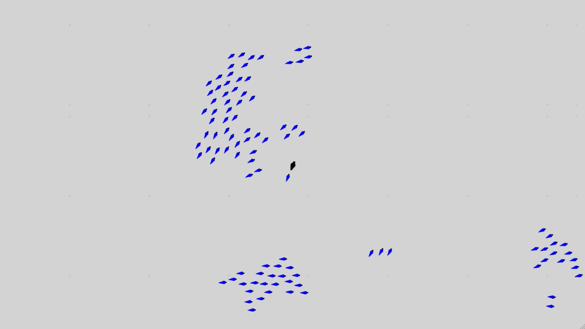
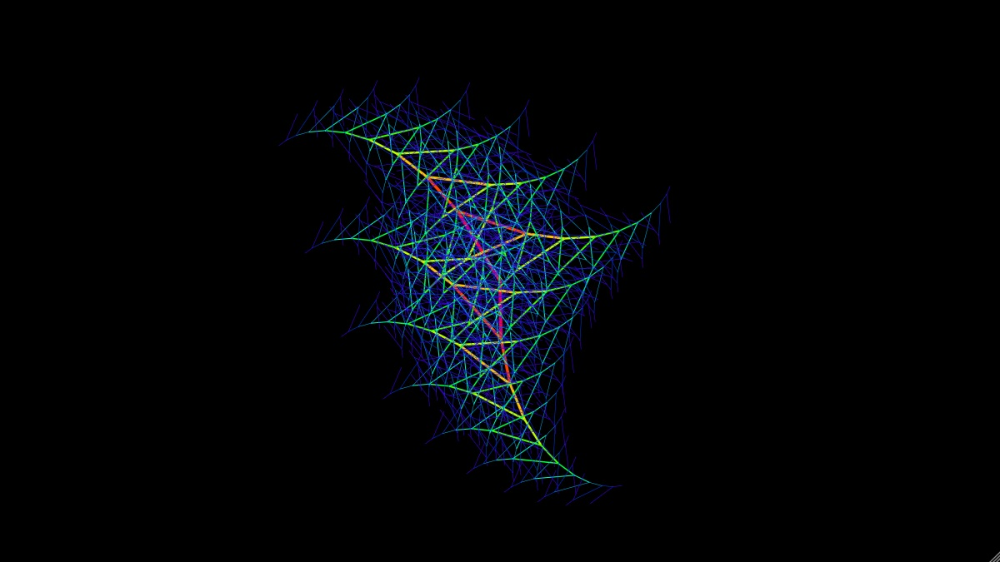

Selected side projects

An implementation of an artificial life program, first developed in the
1980s. In brief, just three simple rules lead to intelligent flocking
behaviour. Implemented all my own tooling from the groundup, including
vector algebra and dynamic frame loop adjustments.

A tribute to the vaporwave aesthetic. Take a sunset trip through the
infinite metropolis. Rendered with
three.js

A Julia Set renderer whose initial offset value rotates through the
complex plane. Primarily written in Rust compiled to WASM, and called from
JavaScript.

A Lindenmayer fractal generator. Creates a random branch structure and
recursively reapplies it to itself. Written solely in Vanilla JS and HTML5
Canvas.

A little experiment with voronoi cells. A cloud of points travel randomly
across the world space, while every frame the space is divided by Voronoi
cells. The heavy lifting is done by
d3-delaunay

Animates a rotating tiling system. I got the idea for this while looking
at a brick wall and observing that the conventional brick laying pattern
is great at preventing slipping vertically but not horizontally. So I
started wondering about tiling patterns which don't allow slippage in any
direction, and I made this to help me visualize it.
And many more on GitHub.